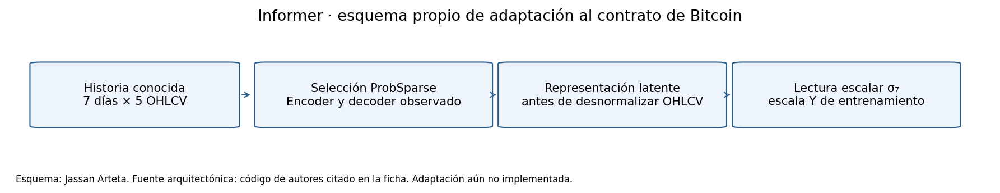
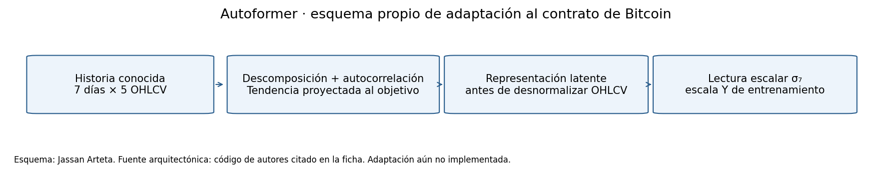
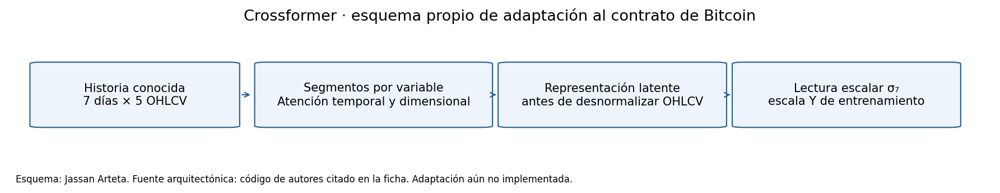

3. Revisión Sistemática del Estado del Arte#
Resultado bibliográfico: selección provisional de diez modelos de Deep Learning para pronosticar la volatilidad de Bitcoin, con exportaciones de WoS y Scopus, lectura de diez originales completos —215 páginas físicas— y código de autores identificado por commit y hash. La ampliación del 06/11/2026 añade un cribado local por reglas de los 7.833 grupos recibidos, con decisión provisional y motivo por registro; no cierra la elegibilidad global por texto completo.
Las fichas, el flujo inicial y los contadores bibliográficos del 05/11/2026 se conservan como evidencia histórica. La sección 5 documenta después la réplica externa de TimeMixer y el piloto de tres modelos en ETTh1. En la etapa actual se implementaron adaptadores D7 para el piloto P0 de desarrollo, cuya ejecución completó 220 trayectorias y 440 ajustes bajo el protocolo registrado; esto todavía no acredita el benchmark final, la búsqueda HPO ni la potencia del procedimiento definitivo.
Estado de la revisión: recepción, deduplicación, extracción de diez originales y primera pasada por reglas sobre todos los grupos recibidos completadas. Permanecen abiertos la cobertura de las consultas, la validación editorial de las decisiones provisionales, la elegibilidad por texto completo, los siete cuerpos aplicados de apoyo y los cuartiles por año. También se ejecutaron tres consultas locales sobre los registros recibidos; siguen pendientes sus búsquedas nativas WoS/Scopus y los originales de los mecanismos de origen. No se presenta un PRISMA global cerrado.
La disposición más específica de §3.2 de la guía exige el Top 10 adicional a GRU, LSTM y TCN de E1, una referencia no profunda y otra trivial: mínimo quince configuraciones. Las cuatro familias deben estar representadas dentro de los diez modelos propuestos, sin contar esas referencias.
Tras recibir la guía completa de 65 páginas, la sección 7 resuelve la ruta F2a, series de tiempo, y amplía el catálogo a veinte configuraciones, de las cuales quince son ajustables. Este catálogo distingue las variantes ajustables de E2, las anclas fijas de E1 y las referencias temporales; no representa veinte modelos ya evaluados. El cribado bibliográfico nuevo conserva el Top 10 provisional: una mención en un resumen no basta para sustituir sus integrantes.
3.1 Estrategia de búsqueda y trazabilidad#
3.1.1 Cadenas aportadas y procedencia#
El usuario ejecutó búsquedas manuales y aportó tres exportaciones nativas WoS de texto plano, con registro completo y referencias citadas. También proporcionó estas dos cadenas:
Q1 · Aplicación: criptomonedas y volatilidad.
TS=((bitcoin OR ethereum OR cryptocurrenc* OR cryptoasset*)
AND (volatility OR "realized volatility" OR "realised volatility")
AND ("deep learning" OR "neural network*" OR transformer*
OR LSTM OR GRU OR CNN OR TCN))
Q2 · Familias y mecanismos candidatos.
TS=(("time series" OR forecasting OR "temporal prediction")
AND (TSMixer OR TiDE OR TimeMixer OR PatchTST OR iTransformer
OR Crossformer OR TimesNet OR MICN OR Mamba
OR "structured state space"))
Se conservan como dos consultas, no como una cadena unida mediante una coma. Q2 es la consulta efectivamente aportada: Informer y Autoformer se identificaron en la evidencia examinada y se ampliaron mediante fuentes de autores; no se atribuye a esa Q2 una búsqueda nominal que no contiene.
Archivo recibido |
Registros completos PT–ER |
Evidencia disponible |
|---|---|---|
|
302 |
Cantidad coincidente con la captura WoS de 302 resultados |
|
500 |
Lote exportado; rango global no confirmado |
|
500 |
Lote exportado; rango global no confirmado |
Total de ocurrencias recibidas |
1.302 |
No equivale al universo global desconocido de las dos consultas |
Los TXT no incorporan la cadena ni el rango global de exportación. La asociación archivo–consulta se mantiene como inferencia pendiente de confirmación; no impide analizar los registros como un conjunto recibido. Los originales se preservan fuera de los archivos públicos. Se publican metadatos bibliográficos derivados, identificadores, conteos y hashes, sin reproducir el conjunto de abstracts, referencias, emails o direcciones.
Fechas: el campo WoS DA indica 2026-11-06, sin hora ni zona. La recepción administrativa se registra como 2026-11-05, America/Bogota. No se convierte el campo DA en una fecha/hora de ejecución de la consulta que el archivo no proporciona. El manifiesto de procedencia conserva las identidades de los tres archivos.
3.1.2 Bases, periodo y cobertura#
Fuente |
Estado verificable de esta etapa |
|---|---|
Web of Science |
Tres exportaciones nativas: 1.302 ocurrencias y 1.298 grupos bibliográficos; total global y rangos de Q2 no confirmados |
Scopus |
CSV nativo con 7.500 registros de 7.874 mostrados en título/resumen/palabras clave: 95,25 % recibido y 374 no recibidos. Los 2.845 resultados de la captura anterior en Keywords corresponden a otra cobertura y no se suman |
IEEE Xplore y arXiv |
Capturas de páginas de búsqueda sin exportación de resultados. Los PDF recuperados directamente de arXiv/OpenReview son originales leídos, sin acreditarlos como una búsqueda sistemática adicional |
GitHub de autores |
Diez backbones con código, revisiones y hashes verificados; fuente primaria de implementación, sin contarlo como base bibliográfica adicional |
La guía exige al menos dos bases y permite arXiv como complemento. Se recibieron exportaciones nativas de dos bases: WoS y Scopus. La cobertura parcial no se convierte en exhaustividad. El manifiesto Scopus conserva hash, nombre y procedencia; el resumen combinado permite comprobar las cuentas. Los intentos del asistente a plataformas académicas fueron bloqueados por la red; las exportaciones nativas proceden del trabajo manual del usuario.
El reenvío de Scopus del 06/11/2026 tiene el mismo SHA-256 que la exportación anterior, 387f673a2146902ce12888ab3d662c095abc33d2cf5b54a168e9e2a12099f7de. No añade registros ni se suma como otra búsqueda: permanecen los 374 no recibidos. Los recibos de la ampliación conservan las huellas de sus entradas y derivados.
El periodo principal propuesto es 2019–2026, con trabajos fundacionales anteriores justificados por separado. Las exportaciones WoS recibidas contienen años nominales 2006–2027, por lo que no se afirma que ya estén filtradas a ese intervalo. Sobre los 1.298 grupos bibliográficos WoS deduplicados:
1.222 tienen año nominal 2019–2026.
26 tienen año nominal fuera del intervalo y Early Access 2019–2026: requieren verificar la fecha efectiva, sin descartarlos solo por el volumen de 2027.
49 quedan fuera de la ventana y requieren justificación fundacional o exclusión.
Uno no tiene la ventana de publicación confirmada con los campos disponibles.
Scopus contiene años nominales 1997–2027, incluidos 112 registros de 2027 sin fecha explícita de Early Access: deben verificarse antes de declararlos elegibles. No se traslada automáticamente a Scopus la fecha de publicación anticipada disponible en WoS. La cadena completa y los filtros efectivos del CSV no están embebidos en el archivo; se conserva la consulta aportada y la captura, sin inventar filtros o rangos. No se extrapolan frecuencias de estas exportaciones parciales a toda la literatura.
3.1.3 Inclusión, exclusión y evaluación de calidad#
Se distinguen volatilidad de criptomonedas, volatilidad financiera de otros activos y mecanismos transferibles de otros dominios. «Volatilidad» como contexto de un artículo de precios, trading o clasificación no acredita una red que pronostique nuestra variable continua σ₇.
Criterio |
Regla de revisión |
|---|---|
Relevancia |
Identificar la variable realmente pronosticada y el papel del modelo; separar aplicación directa y transferencia |
Deep Learning |
Mecanismo profundo identificable; modelos lineales o ajustes de hiperparámetros de una misma base no completan automáticamente los diez cupos |
Reproducibilidad |
Verificar código primario o detalles suficientes; código público y adaptación implementada son estados distintos |
Métricas |
Registrar datos, horizonte, unidades, ubicación de la evidencia y dispersión; no comparar RMSE de escalas distintas |
Calidad editorial |
Conservar revista/congreso e índice WoS del registro. Cuartil e impacto requieren fuente y año específicos; permanecen no verificados |
Riesgo metodológico |
Auditar partición, fuga, repeticiones y equidad del ajuste en el original; si solo se examinó el resumen, usar no verificado, no «no reportado» |
Versiones |
Agrupar preprint/publicación cuando su identidad esté verificada y conservar la versión realmente leída; el PDF arXiv v3 de S-Mamba no se atribuye al cuerpo editorial de Neurocomputing 2025 |
No se calculó κ de Cohen: no hay dos revisores humanos independientes acreditados. La curación es editorial asistida por agentes, con verificaciones de identificadores y código; no se presenta como doble revisión humana.
3.1.4 Flujo de recepción y deduplicación#
8.802 ocurrencias recibidas → 7.833 grupos bibliográficos. WoS aporta 1.302 ocurrencias, 1.300 UT únicos y 1.298 grupos; Scopus aporta 7.500 EID únicos y 7.499 grupos después de unir un DOI duplicado. Entre bases se enlazan 964 grupos: 960 por DOI y cuatro por título/año/revista cuando falta DOI. Se conservan 334 grupos exclusivos de WoS y 6.535 de Scopus. Las 969 duplicaciones son cuatro internas WoS, una interna Scopus y 964 enlaces entre bases.
La tabla de deduplicación mantiene cada decisión. Los registros derivados conservan procedencia por archivo y posición. El resumen de importación diferencia ocurrencias, UT, grupos, años y datos ausentes.
Los enlaces entre bases y los 7.833 grupos mantienen los identificadores originales. Las citas WoS TC y Scopus Cited by permanecen separadas; no se suman.

Este flujo conserva el tramo histórico de identificación y depuración. La recuperación dirigida permitió leer diez originales arquitectónicos completos, incluidos apéndices y referencias; sus recibos PDF fijan versión, tamaño, SHA-256 y páginas físicas. La ampliación siguiente agrega el cribado local, sin acreditar todavía elegibilidad global por texto completo. Los diez originales no se presentan como el total de estudios incluidos de una revisión global. Hay además ocho registros WoS de apoyo aplicado; el mismo estudio financiero respalda PatchTST, Informer y Autoformer, y S-Mamba coincide con una de las diez arquitecturas. No son dieciocho estudios independientes.
La detección automática produjo pistas de cribado, no comparadores independientes acreditados. Por ejemplo, TiDE debe distinguirse del término inglés tide —marea—; aparecer en un abstract o una referencia no demuestra que el modelo fuera evaluado como comparador autónomo.
Ampliación del 06/11/2026: cribado local de los 7.833 grupos#
Se aplicó el protocolo reproducible de primera pasada al título y a los resúmenes privados asociados a cada grupo. Se priorizan volatilidad cripto, volatilidad financiera y mecanismos transferibles; los originales y apoyos ya identificados se conservan para revisión. El registro completo documenta cada identificador, procedencia, términos detectados, huella del resumen, regla, motivo y estado. No publica los resúmenes completos.
Decisión de primera pasada |
Grupos |
Interpretación |
|---|---|---|
Exclusión provisional por título/resumen |
4.323 |
Recomendación automática con motivo; requiere validación editorial |
Retención para recuperación o evaluación del texto completo |
2.436 |
Candidato retenido, todavía no estudio incluido |
Revisión manual pendiente |
1.074 |
Objetivo, mecanismo, homónimo o papel del estudio ambiguos |
Total procesado |
7.833 |
Un registro por grupo recibido, sin omisiones ni duplicaciones |
La cola priorizada reúne 3.510 grupos, incluidos los ambiguos; la cola financiera contiene 602. El conteo de motivos, el resumen y el estado PRISMA reconcilian estas cantidades. Las recomendaciones automáticas no son exclusiones finales validadas ni el total de estudios elegibles. La cantidad de incluidos de la revisión sistemática permanece sin determinar, no se sustituye por cero.
Se realizó además una lectura editorial asistida de 17 resúmenes prioritarios: diez declaran pronóstico de volatilidad, seis estudian precio, retorno o trading y uno presenta una definición ambigua entre retorno y volatilidad. Los seis trabajos cripto que mencionaban modelos del Top 10 en esta comprobación se conservaron como contexto de otro objetivo; no se suman como respaldo directo de σ₇. Las diez declaraciones de volatilidad también requieren comprobar definición, arquitectura y protocolo en el cuerpo del artículo. No se acredita lectura completa de estos 17 textos, dos revisores humanos independientes ni κ de Cohen.
3.1.5 Búsqueda transversal de mecanismos#
Se conservan las tres cadenas propuestas para búsquedas nativas. El 06/11/2026 se ejecutaron conjunciones locales de mecanismo, modalidad de origen y transferencia/adaptación sobre los 7.833 grupos ya recibidos. El registro de consultas locales especifica las expresiones, las variantes regex efectivamente utilizadas y su alcance; no equivale al campo TS ni a una nueva consulta global de la base.
TS=(("vision transformer" OR "self-attention")
AND ("computer vision" OR image*) AND (transfer* OR adapt*))
TS=(("MLP-Mixer" OR "token mixing" OR "channel mixing")
AND (vision OR image*) AND (transfer* OR adapt*))
TS=(("selective state space" OR Mamba)
AND (language OR speech OR audio) AND (transfer* OR adapt*))
Consulta local |
Grupos coincidentes |
|---|---|
Atención / visión |
15 |
Mezcla de tokens o canales / visión |
3 |
Estado selectivo / lenguaje, voz o audio |
90 |
Unión sin duplicar grupos |
102 |
Los resultados locales por identificador permiten seguir cada coincidencia. Hay solapamiento entre consultas; 15 + 3 + 90 no representa 108 estudios independientes. Se ejecutaron cero nuevas consultas nativas en esta ampliación. La cobertura heredada, seleccionada por otras consultas, impide interpretar la ausencia de un resultado local como ausencia en WoS/Scopus.
Mecanismo candidato para E3 |
Modalidad de origen y fuente identificada |
Propiedad transferible y cautela |
|---|---|---|
Tokens/segmentos y atención |
Visión: ViT/Swin, reconocidos como inspiración en el README primario de Crossformer |
Relacionar segmentos temporales y canales; conservar el eje de causalidad y limitar segmentos a D7 |
Mezcla de tokens y características |
Visión: MLP-Mixer; la ampliación debe recuperar y extraer su fuente primaria completa |
Separar mezcla temporal y de covariables con menos atención; con siete días no se presume ventaja de coste o precisión |
Memoria selectiva |
Lenguaje/secuencias: Mamba; código y referencia del modelo S-Mamba de pronóstico recuperados |
Seleccionar estado dependiente de la entrada; distinguir tokens de variables de fechas futuras y verificar utilidad en una historia corta |
La tabla alimenta E3 sin comprometer su arquitectura final. La búsqueda local está ejecutada; continúan abiertas las búsquedas transversales nativas y la revisión completa de las fuentes originales de origen. Recuperar código o detectar un mecanismo en un resumen no sustituye esas tareas.
3.1.6 Verificación acotada del material disponible#
La evaluación posterior de admisibilidad aplica criterios explícitos a los diez originales completos ya extraídos: identidad, ventana de publicación, mecanismo profundo, par de métricas localizable, código primario y límites de transferencia. Los diez archivos principales de autores se cotejaron nuevamente con sus hashes. Los estudios resultan admisibles como fuentes de mecanismos de pronóstico de otros dominios, con las limitaciones de calidad ya documentadas. Esto no cierra el universo sistemático, no prueba efectividad en Bitcoin ni certifica las recetas finales D7.
Se revalidaron las identidades y rutas de los 17 resúmenes: diez se retienen para verificar volatilidad en texto completo, seis no acreditan el objetivo de volatilidad por describir precio/retorno/trading, y uno requiere resolver su definición matemática. Es una comprobación acotada de los mismos resúmenes, no diecisiete cuerpos nuevos leídos ni revisores humanos independientes.
La tabla reproducible de intervalos de 29 modelos/familias y su regla de puntuación conservan nulos/vacíos los componentes desconocidos. Se verifican dos identidades originales adicionales en la exportación recibida: MICN, con 597 citas Scopus, y CryptoMamba-SSM de volatilidad, con tres. Este último es distinto de CryptoMamba de precio. Identidad y citas no acreditan cuerpo, código o adaptación; no se produce un ranking final ni se sustituyen modelos solo por menciones o antigüedad.
El trazado de mecanismos de origen localiza ViT/Swin en motivación y referencias de Crossformer, MLP-Mixer en TSMixer y Mamba en S-Mamba, con títulos, autores, año, páginas y cautelas D7. Esa identificación bibliográfica y estructural amplía la tabla de transferencia; siguen pendientes las consultas nativas y no se afirma haber leído nuevos originales de visión/lenguaje.
La cola de fuente de datos distingue ocho coincidencias de Binance: cinco son Binance Coin y tres no bastan para identificar el exchange o proveedor. Ninguna se usa como prueba de uso de datos Binance ni de Q1. El cuartil y el año requieren evidencia propia; no se exige que una referencia haya utilizado exactamente nuestro snapshot.
La recuperación adicional de cuerpos revisó 40 PDF privados, 35 documentos únicos, y cotejó siete cuerpos heredados de E1. Esos siete no son los siete apoyos nuevos de E2: siguen sin recuperarse sus cuerpos y los de once candidatos financieros prioritarios. Se recuperó la copia fijada del manuscrito heredado S2 y se verificó su identidad anterior; no se cuenta como un estudio E2 nuevo. Los README de dos repositorios aplicados, de 230 y 246 bytes, identifican artículos/código y no sustituyen los manuscritos. Dos coincidencias aparentes de DOI se resolvieron como una referencia en otro artículo y una bibliografía del proyecto. Esta recuperación acotada no acredita indisponibilidad global, exclusiones por texto completo ni nuevos resultados de esos estudios.
El resumen y alcance de esta ampliación, sus hashes y los insumos externos pendientes separan estas verificaciones del PRISMA global aún abierto. Los recibos históricos no se reescriben: la admisibilidad de una subcohorte preseleccionada no cambia automáticamente el contador de elegibilidad formal de toda la revisión.
El registro de condiciones de cierre fija los productos faltantes: completar cobertura Scopus y confirmar historia WoS, adjudicar decisiones y cuerpos con motivos por etapa, ejecutar las búsquedas transversales nativas, cerrar los componentes verificables de selección y documentar calidad por año. Los estudios incluidos y elegibles globales permanecen sin determinar, no en cero. El código o los resultados futuros del benchmark no resolverán por sí solos estos pendientes bibliográficos.
3.2 Propuesta del Top 10 para Bitcoin#
La selección de trabajo contiene exactamente diez mecanismos y cuatro familias, con código primario recuperado. Se propone adaptarlos al mismo tensor de siete días y cinco covariables, objetivo σ₇ y horizonte de un día. Su respaldo en otros activos o tareas no demuestra un resultado favorable en Bitcoin.
Modelo |
Familia |
Respaldo representativo en el corpus WoS |
|---|---|---|
TSMixer |
MLP/mixing |
Volatilidad realizada de acciones: 10.1016/j.jfds.2024.100143 |
TiDE |
MLP/mixing |
Pronóstico fotovoltaico: 10.3390/en18102434 |
TimeMixer |
MLP/mixing |
Comparador de pronóstico eólico: 10.1016/j.epsr.2025.112196 |
TimesNet |
Convolucional |
Volatilidad realizada de acciones: 10.1016/j.eswa.2024.124851 |
PatchTST |
Atención |
Comparador financiero: 10.1108/CFRI-01-2024-0032 |
Informer |
Atención |
Comparador financiero en el mismo estudio de 80 acciones |
Autoformer |
Atención |
Comparador financiero en el mismo estudio de 80 acciones |
iTransformer |
Atención |
Pronóstico multivariante de tráfico: 10.1016/j.physa.2024.130185 |
Crossformer |
Atención |
Comparador de pronóstico eólico: 10.1016/j.energy.2025.138706 |
S-Mamba |
Espacio de estados selectivo |
Artículo original de pronóstico multivariado: 10.1016/j.neucom.2024.129178 |
Las diez posiciones agrupan familias; no constituyen un ranking de resultados propios. Los dos artículos financieros de TSMixer/TimesNet y el estudio de Transformers aportan una cercanía de problema mayor que una mera aplicación a precios o a energía. No se atribuye al conjunto completo evidencia directa de regresión de volatilidad de Bitcoin.
3.2.1 Priorización reproducible y sus límites#
Se publica la tabla de puntuación preliminar completa de los diez propuestos. La regla documentada en esta etapa es
\(R\): cercanía de tarea; 0,8 para volatilidad financiera de otros activos y 0,5 para transferencia desde otros dominios de pronóstico. Ningún candidato recibe 1 por una validación directa de nuestro experimento.
\(A\): acceso verificado al código primario; 1 para las diez fuentes recuperadas. No acredita licencia, ejecución ni adaptación D7 resueltas.
\(U\): recencia del año de la fuente arquitectónica identificada, acotada a [0,1] mediante \((año-2019)/7\).
\(C\): citas Scopus por año del original arquitectónico, con tasa
Cited by / (2026 − año de antigüedad + 1), normalizadas por el máximo observado y acotadas a [0,1]. El año de antigüedad conserva Early Access cuando está acreditado: S-Mamba usa 2024, aunque su publicación nominal sea 2025. Se identificaron ocho originales en el CSV; el máximo es PatchTST: 2.435 citas / 4 años = 608,75. Los originales de Informer y Autoformer no se localizaron en la exportación parcial: su componente queda en [0,1], sin atribuirles cero citas. Los EID y conteos originales distinguen el TSMixer de Google del homónimo de IBM/KDD.\(P\): desempeño bajo condiciones comparables al objetivo Bitcoin D7×5 → σ₇. Se verificaron las métricas de los diez originales, pero sus datasets, escalas, horizontes y entradas no permiten asignar este componente para Bitcoin. Permanece en [0,1]. La puntuación tiene amplitud de 15 puntos, o de 30 cuando también faltan citas originales.
La diversidad de al menos cuatro familias es una restricción adicional. Las citas del estudio compartido de 80 acciones no se multiplican ni se usan como citas de tres originales. El límite inferior usa cero únicamente como extremo algebraico del intervalo desconocido. No es un cero observado. El puntaje prioriza dentro de esta propuesta; no es una clasificación exhaustiva de los 7.833 grupos. La regla se documenta después de la exploración bibliográfica y antes de entrenar E2, sin atribuirle un preregistro anterior a las búsquedas.
La reconsideración del 06/11/2026 incorpora 29 modelos o familias, incluidos alternativas y baselines. Separa menciones, comprobaciones editoriales por resumen y fuentes originales, y conserva vacíos los componentes desconocidos de código, rendimiento comparable, cuartil o representatividad. Las menciones no son frecuencias verificadas de comparadores independientes; los intervalos de los diez propuestos siguen siendo los históricos. No se asignan ceros a las alternativas sin verificar ni se produce un ranking final nuevo. El Top 10 no cambia por esta primera pasada.
3.2.2 Alternativas y razones para no cerrar su inclusión#
Alternativa |
Evidencia/razón documentada |
|---|---|
CryptoMamba-SSM |
Respaldo directo de Bitcoin, DOI 10.1109/OJCS.2026.3651226. Reserva prioritaria: el resumen no permite verificar configuración completa ni código; no se incorpora como una implementación ya reproducible |
MICN |
Aparece en el corpus, pero la evidencia financiera revisada es menor y varias aplicaciones son variantes/híbridos. Se mantiene como alternativa, sin atribuirle resultados de sus modificaciones |
S4 |
Mecanismo relevante; no se ha verificado un soporte aplicado comparable que desplace las opciones propuestas |
N-BEATSx / N-HiTS |
Evidencia financiera pertinente; sus usos originales de historia del objetivo requieren revisar la compatibilidad con el contrato sin rezagos explícitos de Y |
TFT / DeepAR |
Revisar historia del objetivo, variables estáticas/futuras y disponibilidad antes de considerarlos comparaciones con la misma información |
CNN-LSTM / BiLSTM |
Hay estudios de volatilidad de criptomonedas; falta completar aquí configuración y controles temporales de esos originales. Se conservan como alternativas, sin asumir dimensionalidad CNN o uso legítimo de datos futuros |
MLP / DFFNN |
Los resúmenes de LSTM-GARCH y redes profundas con GARCH declaran comparaciones de volatilidad cripto. Extraer cuerpos, profundidad y roles autónomos/híbridos; MLP no equivale automáticamente a una arquitectura profunda definida |
Jordan-RNN |
El estudio de volatilidad de BTC, Ripple y Ethereum identifica una red de Jordan en el resumen. Falta revisar configuración y validación completas antes de compararla con los seleccionados |
DLinear / ARIMA |
No completan cupos de diez modelos profundos. Pueden contextualizar otros diseños de comparación si se justifican |
Estas razones son de alcance y verificabilidad, no pruebas de inferioridad predictiva. La lista de alternativas no pretende agotar todos los modelos más citados de una literatura global que aún no se ha recuperado completamente.
3.2.3 Referencias adicionales y contrato de adaptación#
El benchmark deberá incluir las tres bases heredadas GRU–LSTM–TCN, Ridge como referencia no profunda y persistencia como referencia trivial, además de los diez propuestos. Ridge puede usar el mismo D7×5. Persistencia mantiene la definición heredada σ₇(t−1), calculada con ocho cierres pasados; es causal, pero no idéntica a la representación de siete barras de las redes.
Todas las nuevas lecturas escalares deben producir el objetivo σ₇, no uno de los cinco precios/volúmenes. Se propone una lectura \(g_\sigma\) anterior a la desnormalización por covariables y una salida no negativa:
No basta cambiar c_out=1 ni seleccionar Close de una salida multivariante. La escala final corresponde al objetivo, ajustada solo en entrenamiento. La rama de tendencia de Autoformer y las conexiones residuales de otros modelos deben proyectarse coherentemente a esa variable. TiDE requiere una adaptación explícita covariate-only para conservar la ausencia de Y rezagada, atributos estáticos y covariables futuras. Esa adaptación no se presenta como ejecución idéntica de la configuración del artículo.
En Informer/Autoformer, el decoder admite contexto observado y placeholders futuros sin valores verdaderos; los embeddings de calendario originales se deben desactivar o sustituir para no añadir canales no acordados. Los parches, segmentos, kernels, frecuencias y niveles de downsampling deben ser válidos con D7. La sección 4 conserva el diseño inicial; la ruta F2a, el protocolo actual y su fuente registrada precisan las decisiones posteriores.
La revisión arquitectónica de §14 y su matriz de decisiones distinguen estructura publicada, receta del piloto y adaptación final. Identificar un backbone no certifica la excepción final de §14: los casos de adaptación y la receta numérica deben verificarse individualmente antes de HPO/P1 o entrenamiento definitivo. El pequeño piloto P0 no exime automáticamente de una búsqueda que resulte obligatoria; los espacios y presupuestos comparables se desarrollan en §11.
3.3 Análisis técnico por modelo#
Las fichas siguientes reúnen lectura del original completo, código inspeccionado, formulación propia simplificada y adaptación propuesta. Cada versión leída se identifica por hash, tabla y página; los estados históricos previos se conservan con su alcance. Los esquemas son originales de este libro; no son reproducciones de figuras editoriales. \(g_\sigma\) representa la lectura escalar común anterior. Las complejidades de estas fichas son estimaciones estructurales de la etapa bibliográfica; no son mediciones del adaptador Bitcoin D7. Las mediciones de las corridas externas ETTh1 se presentan por separado en la sección 5.
Alcance de las fichas conservadas: sus indicaciones de adaptación pendiente y ejecución histórica corresponden al cierre bibliográfico del 05/11/2026. El registro actualizado de fuentes, recetas y revisión de la adaptación D7 está en la matriz arquitectónica y el protocolo enlazados arriba; la ejecución actual de P0 no convierte estas métricas publicadas en resultados Bitcoin ni cierra el benchmark final.
3.3.1 TSMixer#
Familia: MLP / mezcla temporal y de variables.
Fuente arquitectónica: TSMixer: An All-MLP Architecture for Time Series Forecasting, 2023. Identificador: 10.48550/arXiv.2303.06053. La naturaleza editorial o de preprint se conserva en el registro de fuentes.
Texto completo leído: 2303.06053v5, 24 páginas PDF; SHA-256 864079eb9702bca1f27f540819052af94625b226cd5a652a02638800f95b365e. Se distingue esta versión del registro editorial.
Código primario: implementación fijada por commit, SHA-256 84a7451f86b40b989f7ab7aa36368f24f39610ad62d7ce43e474a30a4e006159. Licencia observada: Apache-2.0.

Síntesis matemática propia, basada en el código examinado:
Resultado publicado rastreable: ETTh1 multivariante; variante TSMixer básico multivariante; contexto L=512, horizonte H=96; MSE 0.361 y MAE 0.392, misma fila de la tabla 3, página PDF 10. Escala: estandarización global por covariable y RevIN; se evalúa sin invertir la escala global, cuyo ajuste train-only no se explicita. Son resultados externos, no una corrida de Bitcoin ni un ranking comparable entre estos diez artículos.
Calidad y reproducibilidad: La fila LTSF seleccionada no declara repeticiones ni dispersión. Las cinco semillas y media±DE de M5 pertenecen a otra tarea. El PDF declara estandarización global y RevIN, pero no explicita el ajuste del scaler sólo en entrenamiento; parte de los comparadores se importa de otro artículo.
Estado para la fila seleccionada: repeticiones: NR; semillas: NR; dispersión de esta fila: NR; scaler train-only: NR; prueba formal: NR; igual presupuesto HPO: NR. NR significa no reportado en el PDF para ese alcance; NV significa no verificado y partial, evidencia parcial. El detalle y los localizadores están en la matriz metodológica.
Respaldo aplicado adicional: Time-mixing and feature-mixing modelling for realized volatility forecast: Evidence from TSMixer model, WOS:001491684900001. Alcance: Volatilidad realizada de acciones. Sus 9 citas corresponden a ese estudio representativo, no automáticamente al original arquitectónico. El registro de apoyo procede de resumen/metadatos, salvo el preprint original de S-Mamba también leído.
Adaptación propuesta: Mezclar días y variables con MLP residuales; lectura escalar para σ7.
Complejidad: Estimación estructural propia por bloque O(C L² + L C F), más la proyección; L=7 y C=5. No es un recuento medido de FLOPs. El número de parámetros y FLOPs de la configuración ETTh1 seleccionada no está reportado; los tiempos/memorias de otras condiciones se conservan en la matriz de eficiencia, sin trasladarlos a D7 ni a Bitcoin.
Limitación técnica: La fuente elegida es Google/Chen All-MLP TSMixer, distinta de variantes IBM con nombre parecido. Las capas y la receta del adaptador aún deben fijarse antes de entrenarlo.
Alcance histórico de ejecución: la revisión bibliográfica del 2026-11-05 no ajustó modelos ni efectuó reproducciones numéricas. La adaptación D7×5→σ₇ y su evaluación en Bitcoin siguen pendientes. La réplica externa de TimeMixer y el piloto de tres modelos en ETTh1 pertenecen a la etapa posterior del capítulo 5.
3.3.2 TiDE#
Familia: MLP / mezcla temporal y de variables.
Fuente arquitectónica: Long-term Forecasting with TiDE: Time-series Dense Encoder, 2023. Identificador: 10.48550/arXiv.2304.08424. La naturaleza editorial o de preprint se conserva en el registro de fuentes.
Texto completo leído: 2304.08424v5, 21 páginas PDF; SHA-256 eee9d9e3248f262a137e6cf63920137263f3bbbe22cd8608e5eec77882af1999. Se distingue esta versión del registro editorial.
Código primario: implementación fijada por commit, SHA-256 ad8fd8d498809deeed9c847a169cada42134cbd0351b03e750706132a5d151c7. Licencia observada: Apache-2.0.

Síntesis matemática propia, basada en el código examinado:
Resultado publicado rastreable: ETTh1 multivariante; variante TiDE completo, RevIN activado, todos los residuales; tabla 2 con configuración de tabla 8; contexto L=720, horizonte H=96; MSE 0.375 y MAE 0.398, misma fila de la tabla 2, página PDF 8. Escala: estandarización con media/DE del periodo de entrenamiento y RevIN activado para ETTh1. Son resultados externos, no una corrida de Bitcoin ni un ranking comparable entre estos diez artículos.
Calidad y reproducibilidad: Declara cinco ejecuciones independientes. La tabla 5 (PDF p.19) proporciona errores estándar para ETTh1/H96: MSE 0.0003 y MAE 0.0002; no son desviaciones estándar. La normalización con media/DE del periodo de entrenamiento está explícita. Los presupuestos HPO de todos los comparadores no se igualan documentalmente.
Estado para la fila seleccionada: repeticiones: reported; semillas: NR; dispersión de esta fila: reported; scaler train-only: reported; prueba formal: NR; igual presupuesto HPO: NR. NR significa no reportado en el PDF para ese alcance; NV significa no verificado y partial, evidencia parcial. El detalle y los localizadores están en la matriz metodológica.
Respaldo aplicado adicional: A Deep Learning Method for Photovoltaic Power Generation Forecasting Based on a Time-Series Dense Encoder, WOS:001495953000001. Alcance: Pronóstico en otro dominio. Sus 13 citas corresponden a ese estudio representativo, no automáticamente al original arquitectónico. El registro de apoyo procede de resumen/metadatos, salvo el preprint original de S-Mamba también leído.
Adaptación propuesta: Codificar las covariables históricas con bloques densos; decoder escalar sin covariables futuras.
Complejidad: Estimación propia Σℓ O(dℓ dℓ₊₁) sobre capas densas, más proyecciones de variables. Los anchos no están fijados; no se infieren parámetros ni FLOPs numéricos. El número de parámetros y FLOPs de la configuración ETTh1 seleccionada no está reportado; los tiempos/memorias de otras condiciones se conservan en la matriz de eficiencia, sin trasladarlos a D7 ni a Bitcoin.
Limitación técnica: La interfaz original no se ejecuta sin cambios bajo el contrato heredado. La cabeza/skip escalar y retirar historia del objetivo deben declararse como adaptaciones.
La formulación original incorpora historia del objetivo y covariables futuras; la versión covariate-only bajo el contrato vigente es una adaptación explícita que necesita validación, no una reproducción idéntica.
Alcance histórico de ejecución: la revisión bibliográfica del 2026-11-05 no ajustó modelos ni efectuó reproducciones numéricas. La adaptación D7×5→σ₇ y su evaluación en Bitcoin siguen pendientes. La réplica externa de TimeMixer y el piloto de tres modelos en ETTh1 pertenecen a la etapa posterior del capítulo 5.
3.3.3 TimeMixer#
Familia: MLP / mezcla temporal y de variables.
Fuente arquitectónica: TimeMixer: Decomposable Multiscale Mixing for Time Series Forecasting, 2024. Identificador: 10.48550/arXiv.2405.14616. La naturaleza editorial o de preprint se conserva en el registro de fuentes.
Texto completo leído: 2405.14616v1, 28 páginas PDF; SHA-256 a599b338e44af70d8e9c87be3c5417bde7864b2c92074e1346703f3e2b641e3d. Se distingue esta versión del registro editorial.
Código primario: implementación fijada por commit, SHA-256 817d62f4aac54c8566e560f6d3785856e31c8ee51460279ee3d0a4823f11d4be. Licencia observada: Apache-2.0.

Síntesis matemática propia, basada en el código examinado:
Resultado publicado rastreable: ETTh1 multivariante; variante TimeMixer unificado, M=3 y cuatro escalas 96/48/24/12; contexto L=96, horizonte H=96; MSE 0.375 y MAE 0.400, misma fila de la tabla 13, página PDF 17. Escala: escala/unidades exactas de las métricas no reportadas en el PDF. Son resultados externos, no una corrida de Bitcoin ni un ranking comparable entre estos diez artículos.
Calidad y reproducibilidad: Declara tres repeticiones. La media±DE de la tabla 9 corresponde al promedio de cuatro horizontes, no a esta fila H96. Sus afirmaciones de IC/significancia no incluyen prueba identificada, p-valores ni extremos reproducibles. La configuración unificada alinea contexto, batch y épocas, sin demostrar igual presupuesto de búsqueda.
Estado para la fila seleccionada: repeticiones: reported; semillas: NR; dispersión de esta fila: NR; scaler train-only: NR; prueba formal: partial; igual presupuesto HPO: NR. NR significa no reportado en el PDF para ese alcance; NV significa no verificado y partial, evidencia parcial. El detalle y los localizadores están en la matriz metodológica.
Respaldo aplicado adicional: Adaptive multi-scale short term wind power forecasting framework based on TimeMixer and Mix-of-Experts, WOS:001569047800001. Alcance: Comparador en otro dominio. Sus 11 citas corresponden a ese estudio representativo, no automáticamente al original arquitectónico. El registro de apoyo procede de resumen/metadatos, salvo el preprint original de S-Mamba también leído.
Adaptación propuesta: Combinar escalas temporales compatibles con siete días; no agregar entradas externas.
Complejidad: Estimación propia O(Σₛ C Lₛ² + costes de FFN de variables), sumando las escalas. No es una medición de FLOPs. El número de parámetros y FLOPs de la configuración ETTh1 seleccionada no está reportado; los tiempos/memorias de otras condiciones se conservan en la matriz de eficiencia, sin trasladarlos a D7 ni a Bitcoin.
Limitación técnica: Las escalas y longitudes predeterminadas para historias de 96/336 pasos no sirven automáticamente para D7. No se añaden variables futuras ni se invierte la escala OHLCV como si el objetivo fuera una de sus columnas.
Alcance histórico de ejecución: la revisión bibliográfica del 2026-11-05 no ajustó modelos ni efectuó reproducciones numéricas. La adaptación D7×5→σ₇ y su evaluación en Bitcoin siguen pendientes. La réplica externa de TimeMixer y el piloto de tres modelos en ETTh1 pertenecen a la etapa posterior del capítulo 5.
3.3.4 TimesNet#
Familia: Convolución multiescala / variación2D.
Fuente arquitectónica: TimesNet: Temporal 2D-Variation Modeling for General Time Series Analysis, 2023. Identificador: 10.48550/arXiv.2210.02186. La naturaleza editorial o de preprint se conserva en el registro de fuentes.
Texto completo leído: 2210.02186v3, 23 páginas PDF; SHA-256 a45cb3d35c7b4db7091439ee714fd43dd6cd9e8f2fb1867f5463ae0433aebbd1. Se distingue esta versión del registro editorial.
Código primario: implementación fijada por commit, SHA-256 f64c4bed1fd7347090044a0163bd4209c9f9ec1c1b19ceff47842df36b64bba7. Licencia observada: MIT.

Síntesis matemática propia, basada en el código examinado:
Resultado publicado rastreable: ETTh1 multivariante; variante TimesNet con Inception compartido; contexto L=96, horizonte H=96; MSE 0.384 y MAE 0.402, misma fila de la tabla 13, página PDF 21. Escala: Series Stationarization declarada; scaler global y unidades exactas de estas métricas no reportados. Son resultados externos, no una corrida de Bitcoin ni un ranking comparable entre estos diez artículos.
Calidad y reproducibilidad: Declara tres repeticiones; la dispersión de esta fila H96 no está reportada. Series Stationarization es una normalización interna y no acredita por sí sola un scaler global ajustado sólo en entrenamiento. Los controles compartidos de entrada/salida no demuestran igual presupuesto HPO.
Estado para la fila seleccionada: repeticiones: reported; semillas: NR; dispersión de esta fila: NR; scaler train-only: NR; prueba formal: NR; igual presupuesto HPO: NR. NR significa no reportado en el PDF para ese alcance; NV significa no verificado y partial, evidencia parcial. El detalle y los localizadores están en la matriz metodológica.
Respaldo aplicado adicional: Charting new avenues in financial forecasting with TimesNet: The impact of intraperiod and interperiod variations on realized volatility prediction, WOS:001283528600001. Alcance: Volatilidad realizada de acciones. Sus 14 citas corresponden a ese estudio representativo, no automáticamente al original arquitectónico. El registro de apoyo procede de resumen/metadatos, salvo el preprint original de S-Mamba también leído.
Adaptación propuesta: Transformar la historia a representaciones de variación 2D; limitar frecuencias al soporte D7.
Complejidad: Estimación propia O(L d log L) para FFT más O(Σᵢ Aᵢ kᵢ² d_in d_out) para convoluciones 2D sobre rejillas con relleno. No se ha medido el coste numérico. El número de parámetros y FLOPs de la configuración ETTh1 seleccionada no está reportado; los tiempos/memorias de otras condiciones se conservan en la matriz de eficiencia, sin trasladarlos a D7 ni a Bitcoin.
Limitación técnica: El README original deriva la implementación a Time-Series-Library: se conservan ambos repositorios. Periodos inferidos por FFT fuera del soporte observado no prueban memoria de largo plazo.
La ecuación 1 del artículo usa techo para el periodo y el código examinado usa división entera (piso); la fórmula anterior describe ese código. FFT_for_Period promedia amplitudes sobre el batch. Para no compartir información entre orígenes temporales, la adaptación propuesta debe seleccionar periodos por ventana o inferir con batch=1, excluir explícitamente la frecuencia cero y limitar k≤⌊L_eff/2⌋. Son controles propuestos, aún no ejecutados.
Alcance histórico de ejecución: la revisión bibliográfica del 2026-11-05 no ajustó modelos ni efectuó reproducciones numéricas. La adaptación D7×5→σ₇ y su evaluación en Bitcoin siguen pendientes. La réplica externa de TimeMixer y el piloto de tres modelos en ETTh1 pertenecen a la etapa posterior del capítulo 5.
3.3.5 PatchTST#
Familia: Atención / Transformer.
Fuente arquitectónica: A Time Series is Worth 64 Words: Long-term Forecasting with Transformers, 2023. Identificador: 10.48550/arXiv.2211.14730. La naturaleza editorial o de preprint se conserva en el registro de fuentes.
Texto completo leído: 2211.14730v2, 24 páginas PDF; SHA-256 ffd4021d25b4959883242f256b0fe4ec42f477f66db78c61bfacf7baa7848b0e. Se distingue esta versión del registro editorial.
Código primario: implementación fijada por commit, SHA-256 49d8bb865e1226d6338842f4b33c4bc6992cefb048dc2a4a5a8c410ca708586b. Licencia observada: Apache-2.0.

Síntesis matemática propia, basada en el código examinado:
Resultado publicado rastreable: ETTh1 multivariante; variante PatchTST/64 supervisado, parche 16 y salto 8; contexto L=512, horizonte H=96; MSE 0.370 y MAE 0.400, misma fila de la tabla 3, página PDF 7. Escala: normalización de instancia declarada; scaler global y unidades exactas de las métricas no reportados. Son resultados externos, no una corrida de Bitcoin ni un ranking comparable entre estos diez artículos.
Calidad y reproducibilidad: La tabla principal usa semilla 2021. La robustez con cinco semillas 2019–2023 y media±DE se estudia para la variante /42; no se atribuye su dispersión a /64. La normalización de instancia está descrita, pero el scaler global y su población de ajuste no quedan explícitos en el PDF.
Estado para la fila seleccionada: repeticiones: reported; semillas: reported; dispersión de esta fila: NR; scaler train-only: NR; prueba formal: NR; igual presupuesto HPO: NR. NR significa no reportado en el PDF para ese alcance; NV significa no verificado y partial, evidencia parcial. El detalle y los localizadores están en la matriz metodológica.
Respaldo aplicado adicional: Can transformers transform financial forecasting?, WOS:001250609400001. Alcance: Volatilidad realizada de acciones. Sus 23 citas corresponden a ese estudio representativo, no automáticamente al original arquitectónico. El registro de apoyo procede de resumen/metadatos, salvo el preprint original de S-Mamba también leído.
Adaptación propuesta: Usar parches cortos y fusionar representaciones de los cinco canales en un objetivo.
Complejidad: Estimación propia O(C P² d + C P d²), con P parches. Reducir tokens puede ahorrar atención, pero con L=7 no demuestra una ventaja. El número de parámetros y FLOPs de la configuración ETTh1 seleccionada no está reportado; los tiempos/memorias de otras condiciones se conservan en la matriz de eficiencia, sin trasladarlos a D7 ni a Bitcoin.
Limitación técnica: Los parches predeterminados de 16/32 pasos exceden D7. Una nueva cabeza que combine canales es una adaptación que debe declararse y validarse.
Alcance histórico de ejecución: la revisión bibliográfica del 2026-11-05 no ajustó modelos ni efectuó reproducciones numéricas. La adaptación D7×5→σ₇ y su evaluación en Bitcoin siguen pendientes. La réplica externa de TimeMixer y el piloto de tres modelos en ETTh1 pertenecen a la etapa posterior del capítulo 5.
3.3.6 Informer#
Familia: Atención / Transformer.
Fuente arquitectónica: Informer: Beyond Efficient Transformer for Long Sequence Time-Series Forecasting, 2021. Identificador: 10.1609/aaai.v35i12.17325. La naturaleza editorial o de preprint se conserva en el registro de fuentes.
Texto completo leído: 2012.07436v3, 15 páginas PDF; SHA-256 95d8d427005e4dab28932b2630886931fc095996fdd4a65d0e050bae801ffc37. Se distingue esta versión del registro editorial.
Código primario: implementación fijada por commit, SHA-256 bc8e062fbbb4f4ae970ca0d02d2bf43b2e92c3251c3627d887c01d35cbc6891a. Licencia observada: Apache-2.0 in LICENSE; README badge separately says CC BY-NC-SA.

Síntesis matemática propia, basada en el código examinado:
Resultado publicado rastreable: ETTh1 multivariante; variante Informer con ProbSparse y distilling, columna Informer sin daga; contexto L=NR (contexto ganador no reportado), horizonte H=24; MSE 0.577 y MAE 0.549, misma fila de la tabla 2, página PDF 6. Escala: estandarización media cero/DE uno declarada; ajuste train-only e inversión al evaluar no explicitados. Son resultados externos, no una corrida de Bitcoin ni un ranking comparable entre estos diez artículos.
Calidad y reproducibilidad: Declara cinco ejecuciones con desplazamiento de los conjuntos de entrenamiento/validación; no equivale a cinco semillas independientes sobre una única partición fija. No reporta dispersión para la fila seleccionada. La estandarización está declarada, sin precisar ajuste sólo en entrenamiento ni inversión al evaluar.
Estado para la fila seleccionada: repeticiones: reported; semillas: NR; dispersión de esta fila: NR; scaler train-only: NR; prueba formal: NR; igual presupuesto HPO: NR. NR significa no reportado en el PDF para ese alcance; NV significa no verificado y partial, evidencia parcial. El detalle y los localizadores están en la matriz metodológica.
Respaldo aplicado adicional: Can transformers transform financial forecasting?, WOS:001250609400001. Alcance: Volatilidad realizada de acciones. Sus 23 citas corresponden a ese estudio representativo, no automáticamente al original arquitectónico. El registro de apoyo procede de resumen/metadatos, salvo el preprint original de S-Mamba también leído.
Adaptación propuesta: Atención dispersa con contexto observado; decoder sin valores futuros verdaderos ni calendario añadido.
Complejidad: El mecanismo original propone atención O(L log L); el modelo completo añade proyecciones/FFN O(L d²) y decoder. No se deduce superioridad de velocidad con L=7. El número de parámetros y FLOPs de la configuración ETTh1 seleccionada no está reportado; los tiempos/memorias de otras condiciones se conservan en la matriz de eficiencia, sin trasladarlos a D7 ni a Bitcoin.
Limitación técnica: La licencia raíz observada es Apache-2.0 y el badge del README indica CC BY-NC-SA: se distinguen código, datos y badge. Debe comprobarse que el distilling sea válido con siete pasos.
Alcance histórico de ejecución: la revisión bibliográfica del 2026-11-05 no ajustó modelos ni efectuó reproducciones numéricas. La adaptación D7×5→σ₇ y su evaluación en Bitcoin siguen pendientes. La réplica externa de TimeMixer y el piloto de tres modelos en ETTh1 pertenecen a la etapa posterior del capítulo 5.
3.3.7 Autoformer#
Familia: Atención / Transformer.
Fuente arquitectónica: Autoformer: Decomposition Transformers with Auto-Correlation for Long-Term Series Forecasting, 2021. Identificador: 10.48550/arXiv.2106.13008. La naturaleza editorial o de preprint se conserva en el registro de fuentes.
Texto completo leído: 2106.13008v5, 20 páginas PDF; SHA-256 6ec6743b8d3df87a91ecd7b17d83123c0132f5ab87dffeb6318c05e2cb13f11b. Se distingue esta versión del registro editorial.
Código primario: implementación fijada por commit, SHA-256 f18e9e82844ed8c4dc26e00c3c2f0b7c278ac8ea8427c4fab7331939bf69829d. Licencia observada: MIT.

Síntesis matemática propia, basada en el código examinado:
Resultado publicado rastreable: ETTh1 multivariante; variante Autoformer speedup, dos capas de encoder y una de decoder; contexto L=96, horizonte H=24; MSE 0.384 y MAE 0.425, misma fila de la tabla 5, página PDF 13. Escala: normalización global del benchmark no reportada en el PDF. Son resultados externos, no una corrida de Bitcoin ni un ranking comparable entre estos diez artículos.
Calidad y reproducibilidad: Declara tres ejecuciones y presenta DE para otros casos, como ETTm2/H96; no se transfiere esa incertidumbre a ETTh1/H24. La normalización global del benchmark no está reportada en el PDF. Los resultados corresponden a la versión speedup.
Estado para la fila seleccionada: repeticiones: reported; semillas: NR; dispersión de esta fila: NR; scaler train-only: NR; prueba formal: NR; igual presupuesto HPO: NR. NR significa no reportado en el PDF para ese alcance; NV significa no verificado y partial, evidencia parcial. El detalle y los localizadores están en la matriz metodológica.
Respaldo aplicado adicional: Can transformers transform financial forecasting?, WOS:001250609400001. Alcance: Volatilidad realizada de acciones. Sus 23 citas corresponden a ese estudio representativo, no automáticamente al original arquitectónico. El registro de apoyo procede de resumen/metadatos, salvo el preprint original de S-Mamba también leído.
Adaptación propuesta: Descomposición y autocorrelación temporal; proyectar coherentemente tendencia y estacionalidad al objetivo.
Complejidad: Correlación basada en FFT O(L d log L), más proyecciones/FFN O(L d²). Es una síntesis estructural propia, no un coste medido del modelo completo. El número de parámetros y FLOPs de la configuración ETTh1 seleccionada no está reportado; los tiempos/memorias de otras condiciones se conservan en la matriz de eficiencia, sin trasladarlos a D7 ni a Bitcoin.
Limitación técnica: Fijar c_out=1 puede difundir una tendencia OHLCV en unidades incompatibles con σ₇. El regresor de volatilidad basado sólo en covariables es una adaptación explícita.
Roll es una operación circular sobre representaciones de historia observada, no una garantía de causalidad por posición. La rama de tendencia en unidades de covariables también debe proyectarse de forma coherente al objetivo σ₇ antes de aplicar la escala Y de entrenamiento.
Alcance histórico de ejecución: la revisión bibliográfica del 2026-11-05 no ajustó modelos ni efectuó reproducciones numéricas. La adaptación D7×5→σ₇ y su evaluación en Bitcoin siguen pendientes. La réplica externa de TimeMixer y el piloto de tres modelos en ETTh1 pertenecen a la etapa posterior del capítulo 5.
3.3.8 iTransformer#
Familia: Atención / Transformer.
Fuente arquitectónica: iTransformer: Inverted Transformers Are Effective for Time Series Forecasting, 2024. Identificador: 10.48550/arXiv.2310.06625. La naturaleza editorial o de preprint se conserva en el registro de fuentes.
Texto completo leído: 2310.06625v4, 25 páginas PDF; SHA-256 83e889795af52c672090255493266e3ea93e7b2a32c528f58074f2f9f757ffc5. Se distingue esta versión del registro editorial.
Código primario: implementación fijada por commit, SHA-256 6f34777a5a12c253a293f79e7e1fd5b6f79ac100b443951e051e269e7e2542db. Licencia observada: MIT.

Síntesis matemática propia, basada en el código examinado:
Resultado publicado rastreable: ETTh1 multivariante; variante iTransformer completo, columna original Ours; contexto L=96, horizonte H=96; MSE 0.386 y MAE 0.405, misma fila de la tabla 10, página PDF 23. Escala: preprocesamiento del benchmark remitido a TimesNet; no son errores de precio bruto ni de Bitcoin. Son resultados externos, no una corrida de Bitcoin ni un ranking comparable entre estos diez artículos.
Calidad y reproducibilidad: El análisis de robustez incluye cinco semillas en otros datasets; su tabla 5 no contiene ETTh1 y no acredita incertidumbre de esta fila. La atención entre variables tiene coste cuadrático en el número de variables, no en el número de fechas. Un contexto común no prueba igualdad de presupuesto HPO.
Estado para la fila seleccionada: repeticiones: NV; semillas: NR; dispersión de esta fila: NR; scaler train-only: NR; prueba formal: NR; igual presupuesto HPO: NR. NR significa no reportado en el PDF para ese alcance; NV significa no verificado y partial, evidencia parcial. El detalle y los localizadores están en la matriz metodológica.
Respaldo aplicado adicional: Short-term freeway traffic speed multistep prediction using an iTransformer model, WOS:001352915400001. Alcance: Pronóstico en otro dominio. Sus 35 citas corresponden a ese estudio representativo, no automáticamente al original arquitectónico. El registro de apoyo procede de resumen/metadatos, salvo el preprint original de S-Mamba también leído.
Adaptación propuesta: Atender entre tokens de variables, cada uno con siete observaciones; lectura escalar de covariables.
Complejidad: Estimación propia O(C L d + C² d + C d²) para embedding/bloque: atención entre C variables, no entre L fechas. El número de parámetros y FLOPs de la configuración ETTh1 seleccionada no está reportado; los tiempos/memorias de otras condiciones se conservan en la matriz de eficiencia, sin trasladarlos a D7 ni a Bitcoin.
Limitación técnica: La ventaja asintótica depende del eje de atención y no acredita una mejora para sólo cinco variables. La lectura escalar debe preceder a cualquier desnormalización por canal.
Alcance histórico de ejecución: la revisión bibliográfica del 2026-11-05 no ajustó modelos ni efectuó reproducciones numéricas. La adaptación D7×5→σ₇ y su evaluación en Bitcoin siguen pendientes. La réplica externa de TimeMixer y el piloto de tres modelos en ETTh1 pertenecen a la etapa posterior del capítulo 5.
3.3.9 Crossformer#
Familia: Atención / Transformer.
Fuente arquitectónica: Crossformer: Transformer Utilizing Cross-Dimension Dependency for Multivariate Time Series Forecasting, 2023. Identificador: OpenReview vSVLM2j9eie; DOI no verificado. La naturaleza editorial o de preprint se conserva en el registro de fuentes.
Texto completo leído: ICLR 2023 conference PDF, 21 páginas PDF; SHA-256 a5fcad16cd810492124af3efad2fa18f7c5f9556fb303bb88360cceaf396183a. Se distingue esta versión del registro editorial.
Código primario: implementación fijada por commit, SHA-256 deee243b2ae877084320dce49e691c8860c56f0cbda269c6f0cdb50848f6c708. Licencia observada: Apache-2.0.

Síntesis matemática propia, basada en el código examinado:
Resultado publicado rastreable: ETTh1 multivariante; variante Crossformer original completo DSW+TSA+HED sin covariables; contexto L=NR (contexto ganador no reportado), horizonte H=24; MSE 0.305 y MAE 0.367, misma fila de la tabla 1, página PDF 7. Escala: normalización con media/DE de entrenamiento declarada en §4.1; la fila se conserva en la escala del benchmark. Son resultados externos, no una corrida de Bitcoin ni un ranking comparable entre estos diez artículos.
Calidad y reproducibilidad: Declara media de cinco ejecuciones y normalización con media/DE de entrenamiento; no proporciona IDs de semillas ni dispersión para esta fila. El contexto ganador exacto no está reportado y no se infiere del ejemplo del README. Algunos comparadores se importan de Informer y utilizan covariables calendario distintas.
Estado para la fila seleccionada: repeticiones: reported; semillas: NR; dispersión de esta fila: NR; scaler train-only: reported; prueba formal: NR; igual presupuesto HPO: NR. NR significa no reportado en el PDF para ese alcance; NV significa no verificado y partial, evidencia parcial. El detalle y los localizadores están en la matriz metodológica.
Respaldo aplicado adicional: Ultra-short-term wind power forecast based on multi-feature information fusion of GAT-Crossformer, WOS:001614987300004. Alcance: Comparador en otro dominio. Sus 18 citas corresponden a ese estudio representativo, no automáticamente al original arquitectónico. El registro de apoyo procede de resumen/metadatos, salvo el preprint original de S-Mamba también leído.
Adaptación propuesta: Segmentación temporal y atención por tiempo y dimensión, con padding exclusivamente derivado del pasado.
Complejidad: Estimación propia O(C S² d + S C R d) para atención temporal y dimensional con routers; S segmentos y R routers. Proyecciones/FFN añaden coste. El número de parámetros y FLOPs de la configuración ETTh1 seleccionada no está reportado; los tiempos/memorias de otras condiciones se conservan en la matriz de eficiencia, sin trasladarlos a D7 ni a Bitcoin.
Limitación técnica: Segmentos de seis pasos y merges de cuatro requieren rediseñar una jerarquía válida con pocos segmentos. El DOI editorial del original no está identificado; se conserva su enlace OpenReview.
Alcance histórico de ejecución: la revisión bibliográfica del 2026-11-05 no ajustó modelos ni efectuó reproducciones numéricas. La adaptación D7×5→σ₇ y su evaluación en Bitcoin siguen pendientes. La réplica externa de TimeMixer y el piloto de tres modelos en ETTh1 pertenecen a la etapa posterior del capítulo 5.
3.3.10 S-Mamba#
Familia: Espacio de estados selectivo.
Fuente arquitectónica: Is Mamba effective for time series forecasting?, 2025. Identificador: 10.1016/j.neucom.2024.129178. La naturaleza editorial o de preprint se conserva en el registro de fuentes.
Texto completo leído: 2403.11144v3, 14 páginas PDF; SHA-256 11f25c26b33a50455c835cd4062d9314b417716c8a6d35356249efa56d230751. Se distingue esta versión del registro editorial.
Código primario: implementación fijada por commit, SHA-256 48952b3906962917bc76345b5247ce350cae3243915142896b1952b4813b5fc9. Licencia observada: Not verified: no root LICENSE found at captured commit.
Síntesis matemática propia, basada en el código examinado:
Resultado publicado rastreable: ETTh1 multivariante; variante S-Mamba principal con bi-Mamba VC y FFN TD; contexto L=96, horizonte H=96; MSE 0.386 y MAE 0.405, misma fila de la tabla 3, página PDF 7. Escala: normalización interna del encoder declarada; scaler global y escala final de estas métricas no reportados. Son resultados externos, no una corrida de Bitcoin ni un ranking comparable entre estos diez artículos.
Calidad y reproducibilidad: En las 14 páginas del preprint suministrado no se reportan repeticiones, semillas, dispersión, prueba formal, optimizador ni presupuesto HPO. La normalización dentro del encoder no demuestra un scaler global train-only. Se leyó el preprint v3 de 2024, no el cuerpo de la publicación editorial de 2025.
Estado para la fila seleccionada: repeticiones: NR; semillas: NR; dispersión de esta fila: NR; scaler train-only: NR; prueba formal: NR; igual presupuesto HPO: NR. NR significa no reportado en el PDF para ese alcance; NV significa no verificado y partial, evidencia parcial. El detalle y los localizadores están en la matriz metodológica.
Respaldo aplicado adicional: Is Mamba effective for time series forecasting?, WOS:001416250600001. Alcance: Modelo original de pronóstico multivariado. Sus 252 citas corresponden a ese estudio representativo, no automáticamente al original arquitectónico. El registro de apoyo procede de resumen/metadatos, salvo el preprint original de S-Mamba también leído.
Adaptación propuesta: Estados selectivos entre tokens de variables; salida escalar y escala propia del objetivo.
Complejidad: Embedding O(C L d) y scan selectivo lineal en C tokens de variables para estado/ancho fijos, más FFN/proyecciones. Esta implementación no recorre simplemente L tokens cronológicos. El número de parámetros y FLOPs de la configuración ETTh1 seleccionada no está reportado; los tiempos/memorias de otras condiciones se conservan en la matriz de eficiencia, sin trasladarlos a D7 ni a Bitcoin.
Limitación técnica: No se verificó licencia raíz. Un docstring copia una referencia a iTransformer; la identidad se contrasta con README y registro editorial. Los módulos registrados pero inactivos exigen una política explícita al contar parámetros.
La bidireccionalidad recorre tokens de las cinco variables ya observadas, no fechas futuras. El código registra módulos que no participan en forward; al implementarlo habrá que distinguir parámetros registrados y activos. No se verificó una licencia raíz que autorice reutilizar ese código.
Alcance histórico de ejecución: la revisión bibliográfica del 2026-11-05 no ajustó modelos ni efectuó reproducciones numéricas. La adaptación D7×5→σ₇ y su evaluación en Bitcoin siguen pendientes. La réplica externa de TimeMixer y el piloto de tres modelos en ETTh1 pertenecen a la etapa posterior del capítulo 5.
3.4 Comparación crítica y brecha de investigación#
3.4.1 Resultados originales y condiciones de comparación#
Se extrajo un par MSE/MAE de la misma fila y variante para cada arquitectura, escogiendo ETTh1 multivariante cuando aparece en el PDF. Los diez casos tienen siete canales, pero cambian el horizonte, la longitud de entrada, el escalado y la partición. Son medidas externas, en las condiciones de sus artículos; no son resultados de Bitcoin ni una clasificación comparable. En particular, no se ordenan estas cifras de menor a mayor para elegir un ganador.
La matriz de métricas y las fichas completas conservan versión, hash, variante, ubicación y escalado. Las páginas son páginas físicas del PDF recibido, comenzando en uno; la numeración impresa se guarda por separado. NR significa no reportado en la versión leída; NV, no verificado. Ninguno significa cero.
Modelo |
Variante |
L |
H |
MSE |
MAE |
Tabla / página PDF |
|---|---|---|---|---|---|---|
TSMixer |
Básico |
512 |
96 |
0.361 |
0.392 |
3 / 10 |
TiDE |
Residual, RevIN |
720 |
96 |
0.375 |
0.398 |
2 / 8 |
TimeMixer |
Unificado |
96 |
96 |
0.375 |
0.400 |
13 / 17 |
TimesNet |
Backbone final |
96 |
96 |
0.384 |
0.402 |
13 / 21 |
PatchTST |
/64 supervisado |
512 |
96 |
0.370 |
0.400 |
3 / 7 |
Informer |
ProbSparse, distilling |
NR |
24 |
0.577 |
0.549 |
2 / 6 |
Autoformer |
Speedup |
96 |
24 |
0.384 |
0.425 |
5 / 13 |
iTransformer |
Original |
96 |
96 |
0.386 |
0.405 |
10 / 23 |
Crossformer |
DSW + TSA + HED |
NR |
24 |
0.305 |
0.367 |
1 / 7 |
S-Mamba |
S-Mamba, no D-Mamba |
96 |
96 |
0.386 |
0.405 |
3 / 7 |
No se mezclan PatchTST/64 MSE 0,370 con MAE 0,399 de /42; el par correcto de /64 es 0,370/0,400. TimeMixer unificado L96 tiene 0,375/0,400; la fila optimizada 0,361/0,390 corresponde a otra condición. Autoformer usa ETTh1 H24 de su apéndice; ETT* de la tabla principal es ETTm2, no ETTh1. Informer y Crossformer ofrecen ETTh1 H24; no se les atribuye una fila ETTh1 H96 inexistente en esos originales.
Las versiones leídas son TSMixer 2303.06053v5, TiDE 2304.08424v5, TimeMixer 2405.14616v1, TimesNet 2210.02186v3, PatchTST 2211.14730v2, Informer 2012.07436v3, Autoformer 2106.13008v5, iTransformer 2310.06625v4, Crossformer PDF ICLR 2023 y S-Mamba 2403.11144v3. El identificador editorial de S-Mamba corresponde a Neurocomputing 2025; su PDF leído es el preprint v3 de 2024, sin atribuirle la lectura del cuerpo editorial.
3.4.2 Calidad metodológica y sesgo de reporte#
La matriz de calidad registra partición, escalado, ajuste del scaler solo en train, repeticiones, semillas, incertidumbre, pruebas y equidad del HPO. Se evalúa la fila seleccionada, sin trasladarle desviaciones de otro dataset o variante. La lectura del artículo acredita lo que reporta; no constituye una auditoría ejecutada de sus datos o código.
Modelo |
Repeticiones y dispersión pertinentes |
Límite que afecta la comparación |
|---|---|---|
TSMixer |
Repeticiones y dispersión de la fila ETTh1: NR. Cinco semillas de M5 corresponden a otra tarea |
Escalado descrito; ajuste global solo en train no explicitado. Table 2 imprime 7:2:1 para Weather/Electricity/Traffic; no se sustituye silenciosamente |
TiDE |
Cinco ejecuciones; Table 5, PDF p19, informa error estándar, no DE: 0,0003 en MSE y 0,0002 en MAE para ETTh1 H96 |
Declara 7:1:2 para todos los datasets y normalización con train. No se reemplaza por el split habitual de otro repositorio |
TimeMixer |
Tres ejecuciones. La Table 9 de PDF p15 menciona IC99 % sobre agregados de horizontes; no aporta un contraste completamente identificable para la fila elegida |
Presupuesto HPO idéntico entre bases no acreditado. La Table 6 imprime 15 min para ETTh1/h2: inconsistencia documental conservada |
TimesNet |
Tres ejecuciones; dispersión específica del par seleccionado NR |
Stationarization interna no acredita por sí sola el ajuste correcto de un scaler global |
PatchTST |
Fila principal supervisada con semilla 2021. Cinco semillas 2019–2023 y DE en Table 14, PDF p20, corresponden a /42, no /64 |
No se transfieren esas DE al par /64. Los resultados supervisados y de preentrenamiento permanecen separados |
Informer |
Cinco ejecuciones con desplazamientos de train/validación; no se acreditan como cinco semillas independientes. DE de la fila NR |
Normalización z-score descrita; ajuste solo en train NR. HPO común con igual presupuesto entre familias NR |
Autoformer |
Tres ejecuciones. La DE de Table 10, PDF p17, corresponde a ETTm2 H96 y no a ETTh1 H24 |
No se trasladan incertidumbre ni escala entre esos dos casos |
iTransformer |
Cinco ejecuciones de robustez en Table 5 cubren otros seis datasets. Repeticiones de la fila ETTh1 no verificadas |
La robustez de otras tablas no acredita incertidumbre de este caso |
Crossformer |
Cinco ejecuciones; identificadores de semillas y dispersión de la fila seleccionada NR |
El lookback ganador de ETTh1 H24 es NR; la búsqueda incluye varias longitudes. Su ejemplo README L168 no identifica la receta ganadora |
S-Mamba |
Semillas, repeticiones, dispersión e inferencia NR en las 14 páginas del preprint |
Split, optimizador y presupuesto de ajuste NR en esta versión. LayerNorm interna no establece el escalado global |
La documentación disponible no acredita un presupuesto idéntico de HPO para todos los comparadores de ninguno de los diez originales. Esto limita la atribución de una ventaja exclusivamente a la arquitectura. No implica que se haya demostrado optimización desigual, fuga o invalidez de sus resultados. Por la misma razón, ausencia de p-valores de una fila no prueba ausencia de efecto.
El respaldo aplicado también requiere cautela. El resumen de TimesNet financiero informa competitividad en RMSE/QLIKE y resultados menos favorables en MAE/MAPE; el de TSMixer indica que la ventaja disminuye con pocos activos. El artículo financiero compartido por tres Transformers no son tres estudios independientes. De los ocho apoyos representativos se leyeron sus registros/resúmenes; salvo la identidad de S-Mamba con uno de los originales, sus cuerpos completos no se han extraído aquí. No se les atribuyen tamaños de efecto o pruebas que sus resúmenes no identifican.
3.4.3 Complejidad, coste y adaptación causal#
La matriz de eficiencia conserva parámetros, FLOPs, tiempos, memoria, hardware y condiciones cuando se reportan. Los campos no reportados permanecen NR. Las estimaciones estructurales de las fichas son derivaciones propias; no son mediciones de FLOPs, parámetros o tiempo del modelo adaptado.
Familia / modelos |
Mecanismo y coste que debe medirse |
Riesgo concreto con D7×5 |
|---|---|---|
MLP: TSMixer, TiDE, TimeMixer |
Proyecciones densas, mezcla de tiempo/canales y número de escalas; el coste depende de las anchuras elegidas |
TiDE requiere retirar entradas ajenas al contrato y proyectar skips al objetivo. En TimeMixer, M=2 downsamplings ya genera longitudes 7/3/1; no se copia M=3 si produce una escala vacía |
Convolución: TimesNet |
FFT y convoluciones sobre periodos seleccionados |
Excluir frecuencia DC explícitamente, limitar top-k a frecuencias positivas y comprobar longitud efectiva. El artículo usa ceil(T/f), el código inspeccionado floor(T/f): son fuentes distintas |
Atención: PatchTST, Informer, Autoformer, iTransformer, Crossformer |
Tokens, segmentos, dimensión latente y atención: la eficiencia asintótica depende del eje donde se aplica |
Con solo siete fechas, no se presume beneficio de atención eficiente. iTransformer y S-Mamba procesan tokens de variables; su bidireccionalidad sobre historias observadas no significa usar fechas futuras |
Estados: S-Mamba |
Estado selectivo y bloques bidireccionales sobre cinco tokens de variables |
El código registra módulos que no se usan en forward; si se instancia, deben distinguirse parámetros registrados y activos. La licencia raíz no se verificó |
El código de TimesNet obtiene amplitudes FFT promediadas entre muestras del batch. Si se agrupan orígenes distintos, la selección de periodos de una muestra podría depender de historias posteriores a su propio origen. La adaptación propuesta exige inferencia con batch 1 o selección de periodos independiente por origen, más exclusión de f=0 incluso en empates de amplitud cero. Es una condición del adaptador que debe probarse, no una acusación sobre el artículo. El operador Roll de Autoformer es circular dentro del contexto disponible; no se describe como causal por posición. El límite causal común está en la información disponible al emitir cada pronóstico.
Los costes publicados tampoco comparten condiciones. Por ejemplo, TSMixer informa 189 K parámetros, 11.077,95 s y 96 pasos de inferencia/s en M5, Table 6, PDF p13; ese tiempo no está identificado inequívocamente como total o por época. No corresponde a ETTh1 ni a Bitcoin D7. Los costes de imputación de TimesNet tampoco representan su forecast. Las barras de memoria de S-Mamba y las curvas de otros artículos no se convierten en tiempos exactos cuando no tienen etiquetas numéricas. La comparación de coste para E2 tendrá que medirse con el mismo hardware, batch, precisión y protocolo.
3.4.4 Reproducibilidad y brecha verificable#
En el subcorpus de arquitecturas hay 10/10 originales completos leídos y 10/10 fuentes públicas de código identificadas por commit. Código accesible no equivale a licencia de redistribución verificada en todos los casos. Al cierre de la etapa bibliográfica del 05/11/2026 se registraron 0/10 reproducciones numéricas y 0/10 descargas de benchmarks verificadas en esa etapa. Esos ceros son históricos, no totales actuales del proyecto: la sección 5 documenta posteriormente veinte ajustes en ETTh1 —cinco de réplica TimeMixer y quince del piloto de tres modelos—. La identidad estricta de la fila publicada y la compatibilidad numérica se califican allí según sus evidencias. El piloto P0 D7 pertenece a otra etapa de desarrollo y ya está ejecutado y analizado, con 220 trayectorias y 440 ajustes. Permanecen pendientes el cierre de todos los adaptadores finales, HPO/P1 y el benchmark Bitcoin. Tampoco los diez originales estiman la reproducibilidad de los 7.833 grupos ya cribados por reglas, pero sin elegibilidad global por texto completo.
El registro histórico de código conserva la etapa previa, en la que todavía se habían leído cero PDF. El registro de lectura de esa etapa y el informe de extracción documentan los diez originales leídos. La extracción congelada se conserva como evidencia de su fecha; la ejecución posterior se incorpora en §5 y §9, y la ampliación bibliográfica del 06/11 en esta sección, sin reescribir esos recibos históricos.
Brecha comprobable en este subcorpus: ninguno de los diez originales leídos evalúa conjuntamente los diez mecanismos con entradas OHLCV D7×5, objetivo σ₇ de BTCUSDT a un día, fechas y referencias heredadas, ajuste comparable e incertidumbre temporal. La afirmación se restringe a esos diez originales y puede refutarse con la hoja de extracción. La ausencia en toda la literatura de una comparación equivalente continúa abierta: exige completar cobertura, validar las decisiones de cribado y extraer los textos elegibles. Las 7.833 decisiones locales no prueban por sí solas esa ausencia global ni garantizan una brecha empírica en el piloto.
La brecha conecta con las RQ de la sección 1: ganancia frente al baseline heredado, deterioro en alta volatilidad y relación error/coste. La revisión no modifica la métrica, δ, la partición ni convierte el test ya conocido en una evaluación confirmatoria nueva. Los resultados de E1 siguen siendo la referencia hasta ejecutar el benchmark de E2.
3.5 Descargas y cierre pendiente#
Descargar literatura E2: código, matrices, fichas y diagramas.
Métricas originales con página y tabla, calidad y eficiencia.
Diez recibos de PDF/versiones y extracción estructurada completa.
Puntuación preliminar, fichas de adaptación y código de autores identificado.
Registros combinados WoS/Scopus, resumen de cobertura y deduplicación WoS.
La ampliación del 06/11/2026 se publica por separado en trece artefactos, para conservar la extracción histórica:
El paquete incluye derivados bibliográficos mínimos, fuentes curadas, scripts y sus pruebas. No redistribuye los PDF ni las exportaciones nativas con abstracts y referencias. Sin adjuntos privados, python scripts/compile_e2_fulltext_review.py --check verifica la extracción congelada y sus hashes; python scripts/build_e2_literature_selection.py reconstruye las fichas y figuras con el entorno de requirements-eda.lock.txt. Los importadores WoS/Scopus requieren las exportaciones originales para repetir la importación, con su orden y hashes documentados. Estos pasos no entrenan modelos ni puntúan test.
El cribado local nuevo se reproduce con scripts/screen_e2_literature.py y el conjunto privado combinado de resúmenes, cuyos identificadores deben coincidir exactamente con los 7.833 públicos. El protocolo se documentó después de las búsquedas; no se le atribuye preregistro anterior a ellas. Los trece derivados no contienen resúmenes completos y no acreditan una nueva búsqueda nativa, elegibilidad final ni resultados de entrenamiento.
Producto |
Estado verificable |
|---|---|
Diez nombres y cuatro familias para Bitcoin |
Selección bibliográfica con originales y apoyo aplicado diferenciados |
Originales arquitectónicos |
Diez PDF completos, 215 páginas; admisibilidad acotada y diez hashes de código cotejados; elegibilidad global distinta y abierta |
Fuentes de implementación |
Diez backbones identificados; adaptadores del piloto D7 implementados; cierre de adaptaciones finales y excepciones §14 pendiente |
Dos bases nativas |
WoS y Scopus incorporadas; cobertura parcial documentada |
Cuartiles e impacto por año |
Pendientes de verificación específica; pertenencia a un índice no acredita Q1 |
Estudios aplicados de apoyo |
Ocho registros, uno compartido con el original S-Mamba; siete cuerpos nuevos pendientes. La recuperación verifica siete cuerpos heredados distintos, sin sumarlos como apoyos nuevos |
Puntuación |
Intervalos reproducibles para 29 modelos/familias, con MICN y CryptoMamba-SSM identificados en registros nativos; desconocidos vacíos, sin ranking final |
Cribado local recibido |
7.833 grupos procesados: 4.323 exclusiones provisionales, 2.436 retenidos y 1.074 ambiguos |
Lectura focal de resúmenes |
Diecisiete comprobaciones: diez targets de volatilidad, seis de otro objetivo y uno ambiguo; cuerpos pendientes |
Recuperación de cuerpos pendientes |
40 PDF privados/35 únicos revisados; cero cuerpos de los siete apoyos nuevos y once candidatos financieros recuperados; dos README aplicados no sustituyen los cuerpos |
PRISMA global |
Recepción, deduplicación y primera pasada trazables; cobertura, validación y elegibilidad por texto completo abiertas |
Búsqueda transversal |
Tres consultas locales ejecutadas: 15/3/90 coincidencias y 102 grupos únicos; búsquedas nativas y originales de origen pendientes |
Gap |
Verificado dentro de los diez originales; revisión global abierta |
Ejecución externa posterior a la revisión |
Réplica de TimeMixer y piloto de tres modelos sobre ETTh1; evidencia en §5 |
Piloto D7 de desarrollo |
P0 ejecutado y analizado: 220 trayectorias/440 ajustes; no acredita benchmark final, HPO ejecutado ni potencia definitiva |
Catálogo actual F2a |
Veinte configuraciones, quince de ellas ajustables, en el protocolo; ejecución del benchmark final pendiente |